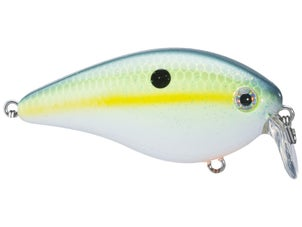

Northern Bass is commited to promoting the sport of bass fishing through guiding services and charitable donations to those in need. We at Northern Bass support conservation of our local lakes to ensure bass fisheries for years to come.
Pat McCarthy. Owner, Bass Guide.
Pat McCarthy Owner of Northern Bass, Pat McCarthy, has spent nearly two decades refining his skills on the water. While he enjoys fishing competetively, what he finds most rewarding in the sport is helping new and existing fisherman hone their skills in the persuit of native largemouth and smallmouth bass.
Joshua Michaels. Bass Guide.
Josh has been a fisherman for more than twenty-five years, with experience on a vast majority of New England bodies of water. He competes regularly in tournaments nationwide, and enjoys teachings others the secrets he has picked up along the way!.
Jigs are great to use around heavy cover, such as rocks, trees and docks.
Suggested Rod: 7-8' Heavy, Fast Action
Suggested Line: 20lb Flurocarbon or 50lb Braid
Jigs
Spinnerbaits are great to use covering water, vast flats or try ripping through vegetation.
Suggested Rod: 7' Medium-Heavy, Moderate-Fast Action
Suggested Line: 15lb Flurocarbon or 30lb Braid
Buzzbaits
Buzzbaits can trigger huge bites in the spring and fall. Use them around isolated structure and try skipping them under docks.
Suggested Rod: 7' Heavy, Fast Action
Suggested Line: 50lb Braid

Crankbaits
Crankbaits are a perfect choice around hard cover or when targeting specific depths. Try deep cranks on deeper flats for smallmouth, or shallow squarebills fished through trees and rock.
Suggested Rod: 7-8' Medium to Medium-Heavy, Moderate Action
Suggested Line: 12lb Flurocarbon
Big Swimbaits
Big bass love swimbaits! Slow roll them alongside docks or down main lake points. Be ready with a follow up bait, like a Senko, to throw at fish that won't commit to the swimbait.
Suggested Rod: 7.5-8' Heavy, Moderate-Fast Action
Suggested Line: 20lb Flurocarbon or 50-65lb Braid
Plastic Softbaits
There are thousands of different softbaits to choose from. Try texas rigs matched with any soft plastic for any type of cover. You can also use soft plastics as jig trailers.
Suggested Rod: 7' Medium to Medium-Heavy, Fast Action
Suggested Line: 10-15lb Flurocarbon or 20lb Braid
Donate Old, Broken Gear!
Do you have old, broken rods or reels that are just collecting dust? Consider donating them! Our refurbished equipment is distributed to local Veterans Affairs healthcare facilities, local Boys & Girls clubs, as well as local Adult Daycare facilities.
Northern Bass is commited to salvaging old fishing gear to refurbish and donate to those who might not otherwise be able to afford or own. Please follow the link below to provide your name, a brief description of your donated gear as well as a pick-up location, and we will do the rest!